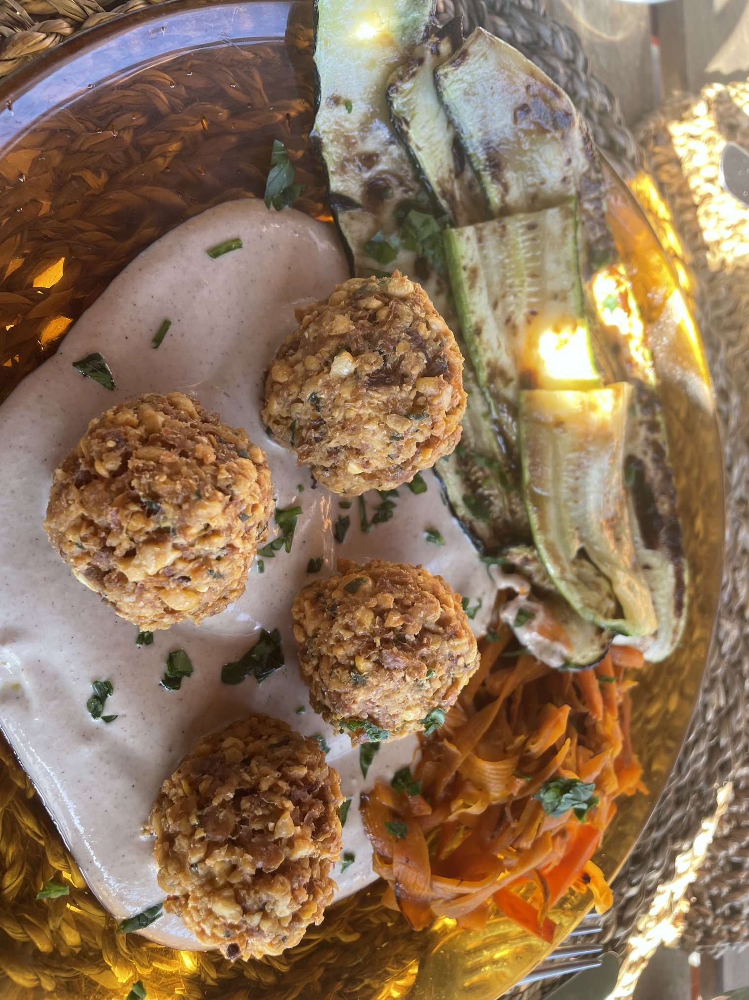

Falafel con berenjena y zanahoria a la brasa sobre base de tahini
Ingredients
2×
- 1 berenjena
- aceite de oliva
- sal
- 2 zanahorias
- 8 falafel
- 3 cdas de tahini
- agua
- zumo de 1/2 limón
- perejil

Preparación
Paso 1
Cortar 1 berenjena en láminas y asarla a la brasa o a la plancha con un poco de aceite de oliva y sal. Rallar o cortar en tiras 2 zanahorias y asarlas también.
Paso 2
Dorar 8 falafel en el horno o en la sartén.
Paso 3
Mezclar 3 cdas de tahini con agua y el zumo de 1/2 limón hasta obtener una salsa cremosa, y salar.
Paso 4
Extender la salsa de tahini en el plato, poner encima los falafel y las verduras, y terminar con perejil picado.